三大事業，同一個品牌
個人保健、環境防護、氫能源。以「Always stand by you, Ocean Medi.」串連守護意義，保留真實產品與研發形象。
 OCEAN MEDI / VISUAL PROPOSAL 01
OCEAN MEDI / VISUAL PROPOSAL 01清透氫流：讓技術有深度，讓畫面能呼吸。
以真實設備、自然人物與品牌藍建立可信的科技形象。氫流是一條敘事引線，帶出三大事業；輕字重、細線與明亮影像共同表現空氣感。
延續已選 H₂ INSIDE，納入「清晰、空氣感、文字與線條優雅」回饋。網站樣張使用英文，提案說明使用繁體中文。主標為提案文案，尚非客戶定稿。
個人保健、環境防護、氫能源。以「Always stand by you, Ocean Medi.」串連守護意義，保留真實產品與研發形象。
客戶 TA 欄位未填。本案暫以企業合作、通路與技術夥伴為主要使用情境，讓訪客先理解應用，再進入洽詢。
以 2560 × 1280 建立核心構圖與視覺節奏。此提案不含 RWD；視覺方向成立後才深化完整首頁。
資料依據：品牌規範、首頁 memo、雙語表、首頁文案與攝影素材。毛米勾勾只參考「提案如何展示」，不取用它的配色、角色、構圖或高效方案規則。
下列比例是一般明亮場景的介面色面積規劃，不含攝影本身的色彩，也不是品牌規範原訂比例。深色入口為局部例外，不能延伸為全站黑底。
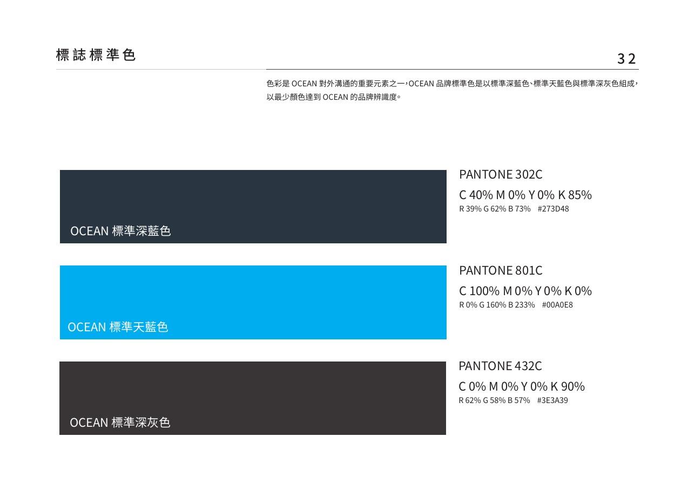
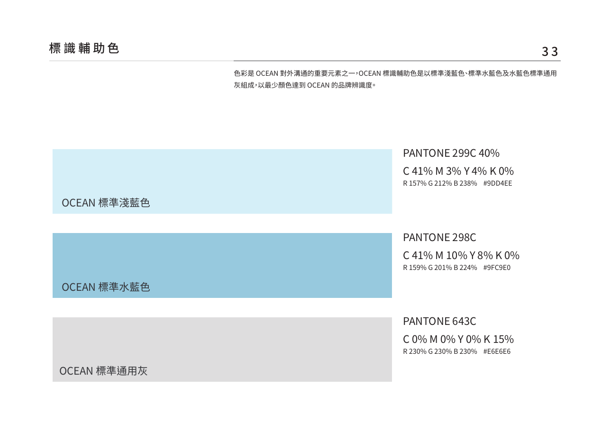
中性留白／非新增品牌標準色。
品牌輔助色／空間與淡色層次。
品牌標準色／正文與主標。
品牌標準色／光點與識別重點。
品牌輔助色／中性分隔。
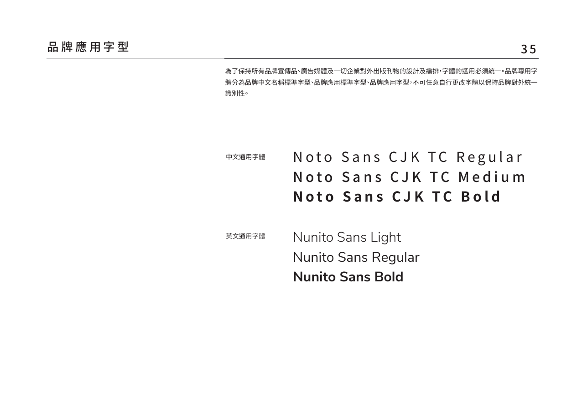
Bringing hydrogen technology into everyday life.
CIS 第 35 頁：英文 Nunito Sans Light／Regular／Bold。本頁與互動草稿已載入本機字型檔，不再以 Helvetica Neue 作設計替代。中文依 Noto Sans CJK TC 的 Regular／Medium／Bold 原則。
| 層級 | 提案尺度 |
|---|---|
| 場景主標 | 190–210 px／300／行高 1.05 |
| 段落主標 | 48–72 px／300–400 |
| 內文 | 20–23 px／400／行高 1.8 |
| 章節標籤 | 14–18 px／500／字距 0.2 em |
大標採輕字重；細小內文不使用極細字。以縮短句子和控制行寬保持優雅。
上方是樣式展示，非送出或洽詢功能。正式按鈕需另含 hover、focus、disabled 狀態。
Personal wellness
個人保健
Environment
環境防護
Hydrogen energy
氫能源
Explore
前往內容
Search
搜尋
Contact
聯絡洽詢
新增原創 SVG 示意，採 64 × 64 網格、1.5 單位描邊、圓端點、無填色。操作圖示以 24–32 px 呈現時另作光學調整，點擊範圍至少 44 px。事業圖示必須搭配文字，心形僅識別類別，不表示醫療功效。
狀態：本次提案樣式，尚未取代客戶正式圖示。裝飾氫流不與功能圖示混用。
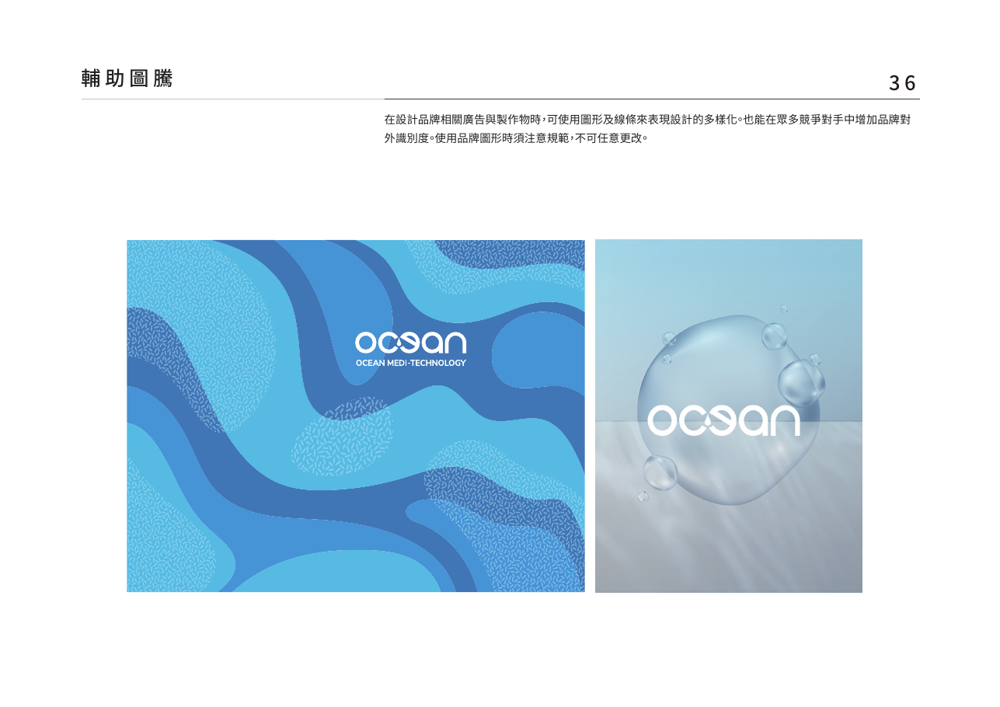
原有藍色曲面、流動輪廓與局部紋理，作為品牌形象與段落背景的正式來源。保留原圖形與配色，不將自行繪製的曲線稱為官方圖騰。
原有透明氣泡、光線與層次是本案空氣感的直接依據。優先使用原始圖稿；本頁完整展示 CIS 原頁，未裁圖或重繪替代。
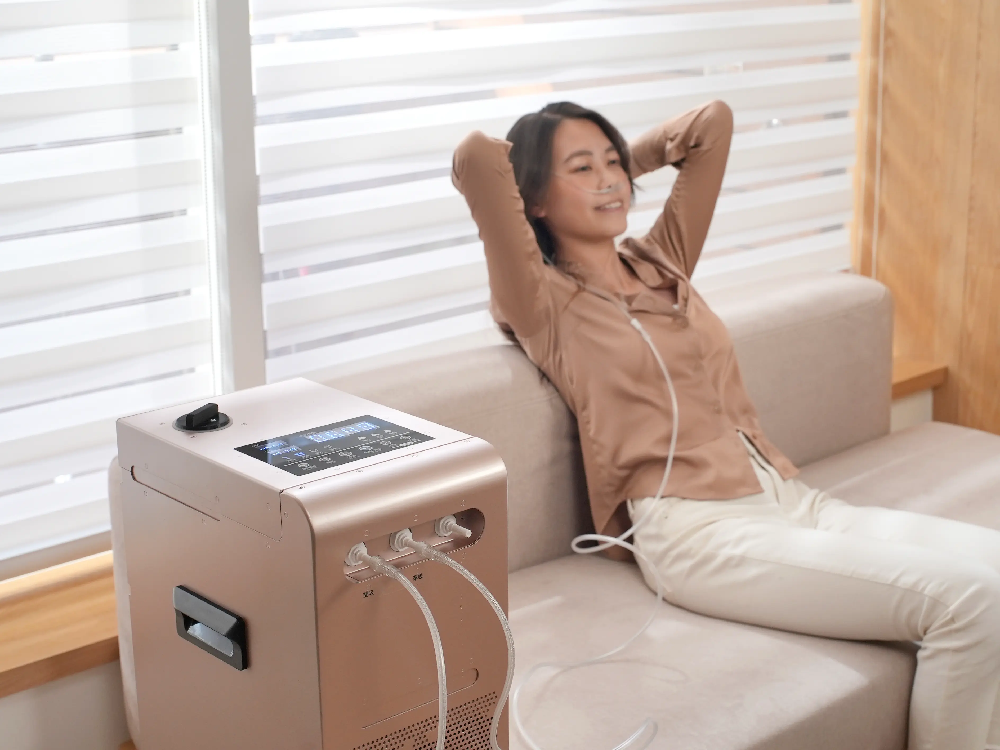
以放鬆動作、真實使用情境為主。保留手勢與設備關係，優先保住臉部，讓視線與留白引導內容。
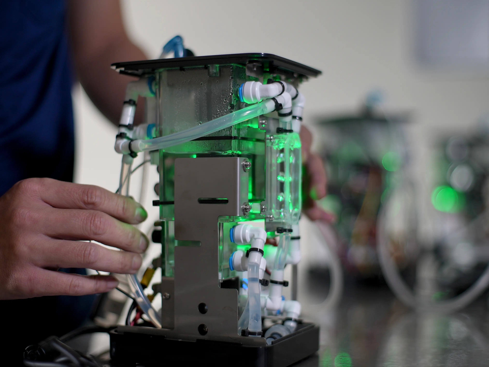
以透明管線、金屬與接頭建立技術可信度。保留設備原貌與指示燈，不把綠光改成虛構藍光。
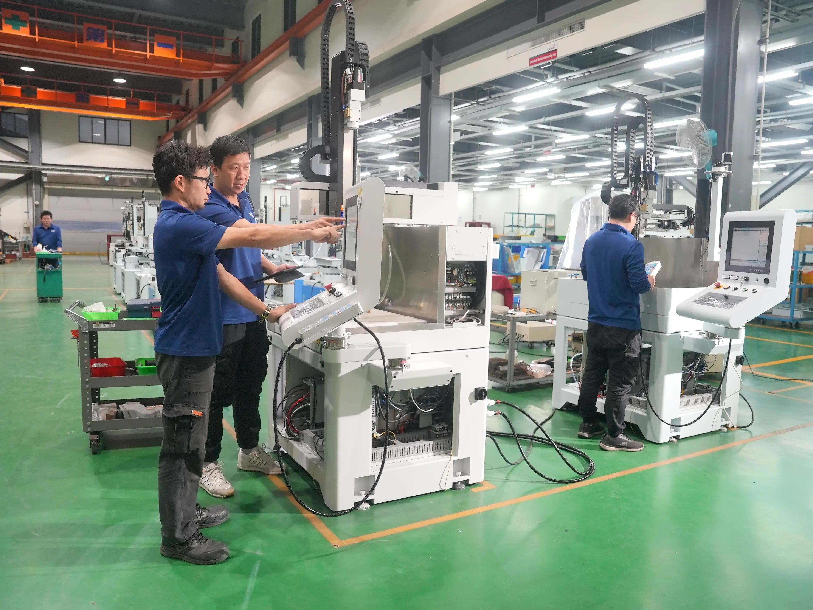
工廠照片代表製造能力，不能當作太陽能製氫現場的證據。能源專章仍需要適切的正式素材。
照片不統一染藍；保留自然膚色、白色設備細節和環境綠。漸層盡量落在留白區，避免遮住產品標誌、接頭及人物五官。
用「技術來源 → 應用分類 → 行動入口」說明網站資訊。三大事業各有技術與內容，不能畫成單一 H₂ 流程適用全部；O₃ 與氫技術須分開標示。
技術名稱與設備特寫
以正式資料說明原理
場景照片與分類標籤
說明應用在哪裡
能力與合作需求
引導洽詢入口
此圖是網站資訊關係，非設備工程圖或效能驗證。粒子大小、流速、數量不代表實際測量；技術與健康敘述沿用客戶核定內容。
下列為 CIS 校正前的英文互動草稿截圖（歷史構圖參考，字型與色彩以本頁 CIS 校正版為準），按 2:1 縮圖展示。它們提供構圖依據，尚非完整首頁或已核准定稿。
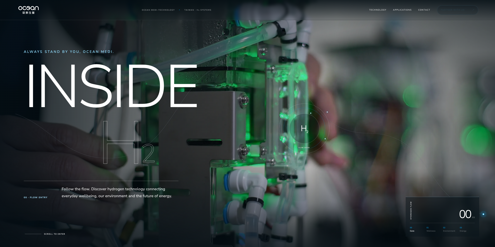
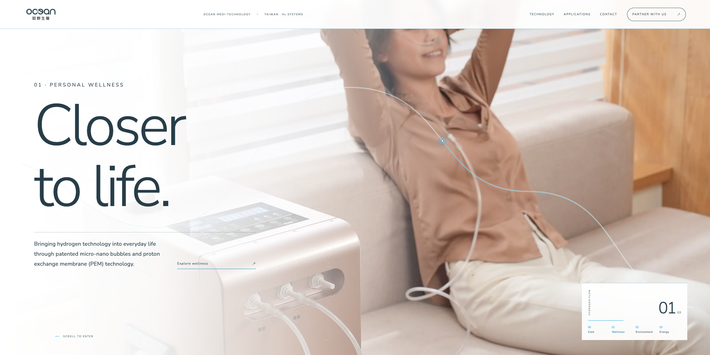
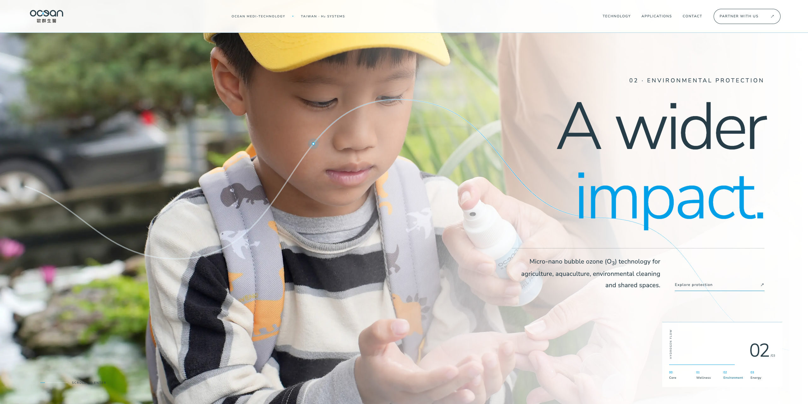
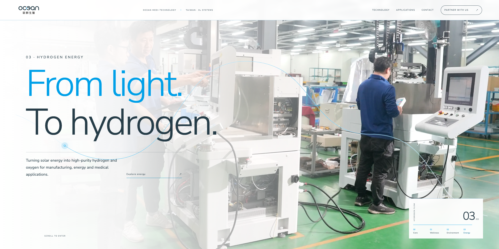
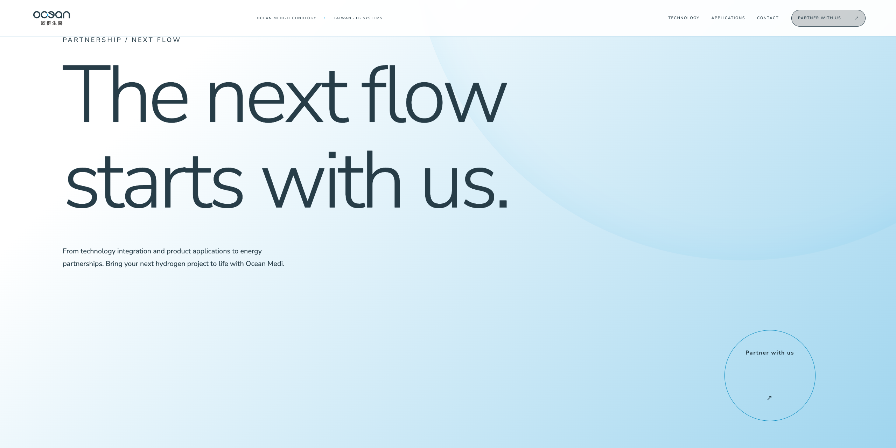
設備近景與入口圓環定位；標題穩定，讓訪客先讀懂品牌。無強制等待片頭。
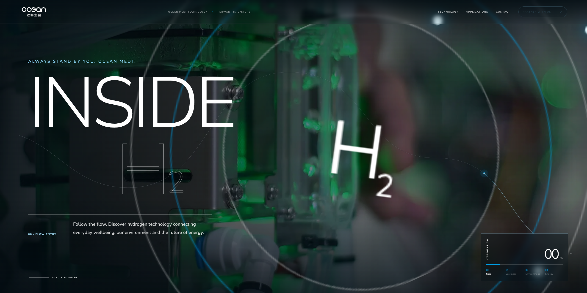
捲動推近設備、入口放大，文字離場；光點沿線前進。轉場亮度變化應柔和，避免刺眼閃白。
人物場景展開，導覽與文字轉為深藍。畫面穩定後才承接說明與 Explore 入口。
目前草稿使用照片縮放、SVG 曲線與 CSS 遮罩，未製作真實 3D 管道或精細照片拆層。反向捲動可返回，減少動態模式顯示完整靜態內容。
H₂ INSIDE、正式標誌與品牌承諾。
個人保健 → 環境防護 → 氫能源，分清各自技術。
技術圖解、核定證據與相關內容入口。
研發、製造與團隊，建立合作信任。
真實文章與日期，維持清楚閱讀。
合作洽詢、聯絡資訊、搜尋與語系入口。
後三類資訊尚未在核心草稿中完整實作；此處列為整頁規劃，不以片段代替內容完整度。
標準色／白色 Logo、品牌規範、62 張修片攝影與組裝紀錄。沿用原比例與品牌配色。
6 款功能 SVG 與網站用色比例為新增提案。品牌背景以 CIS 原有波紋與氣泡為依據，不以新增圖形替代。
英文主標、場景排版、光點、入口轉場及合作 CTA。使用者已給方向回饋，不代表全套樣式定稿。
| 資產 | 目前狀態 | 接續工作 |
|---|---|---|
| Logo／品牌色 | 已有正式檔案 | 沿用原檔，確認淨空與最小尺寸。 |
| 人物／設備／工廠攝影 | 已提供，可作構圖 | 逐場景校正裁切；能源照片不能誤作製氫實景。 |
| Nunito Sans 字型 | 已下載並本機載入 Light／Regular／Bold | 以瀏覽器確認字型載入，重驗字重、字寬與換行。 |
| ICON／背景圖形 | 本頁已展示新增 SVG 與 CSS 樣張 | 方向確認後拆成可重用檔案與元件。 |
| 技術說明圖 | 已有資訊關係示意 | 依核定技術資料深化，未作真實設備原理圖。 |
| 英文文案／數字證據 | 草稿與客戶來源並存 | 對照正式語系表；數字、功效與專利用語須核定。 |